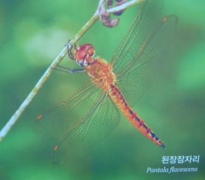
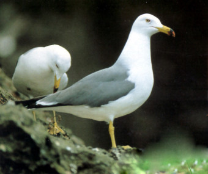
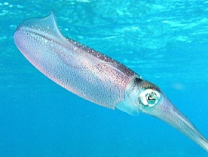
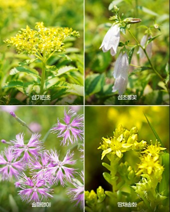

된장잠자리, 민집게벌레, 메뚜기 등 130종
바다제비, 슴새, 괭이갈메기, 황조롱이 등 160종
꽁치, 방어, 복어, 전어, 임연수어, 오징어 등
전복, 소라, 홍합 등
미역, 다시마, 김, 톳 등
민들레, 괭이밥, 섬장대, 강아지풀, 바랭이, 쑥, 쇠비름, 명아주, 질경이, 땅채송화,해국, 섬기린초, 갯까치수염, 왕호장근 등
곰슬(해송), 섬괴불나무, 붉은가시딸기(곰딸기), 줄사철, 박주가리, 동백, 보리밥나무 등
